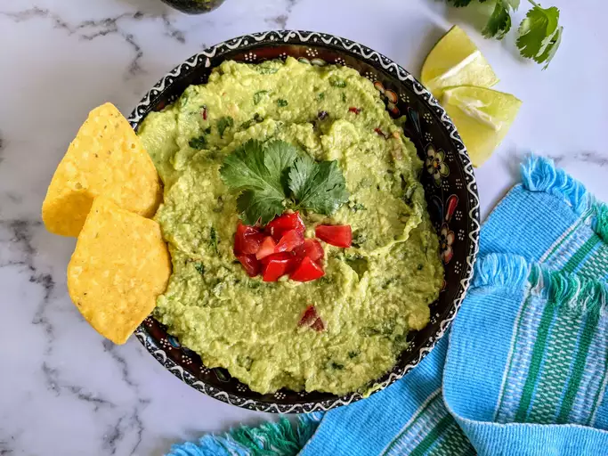

Guacamole

Description
Add instant trendiness to your breakfast game. Turn the tables at your otherwise suboptimal,
less-than-engaging neighbor-aquaintance potluck. Become a friendsgiving god.
Ingredients
- 3 avocados - peeled, pitted, and mashed
- 1 lime, juiced
- 1 teaspoon salt
- 2 roma (plum) tomatoes, diced
- 1/2 cup diced onion
- 3 tablespoons chopped fresh cilantro
- 1 teaspoon minced garlic
- 1 pinch ground cayenne pepper (optional)
Steps
- Mash avocados, lime juice, and salt together in a medium bowl; mix in tomatoes, onion, cilantro, and garlic. Stir in cayenne pepper.
- Serve immediately, or cover and refrigerate for 1 hour for improved flavor.